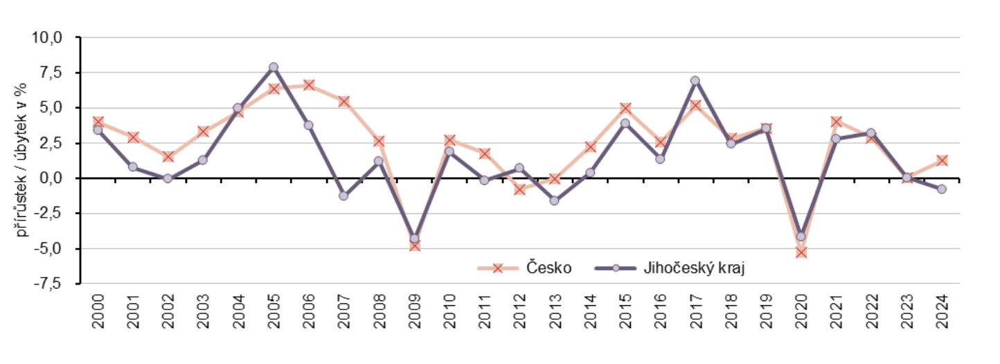

Jihočský kraj je zemědělská oblast s rozvinutým rybníkářstvím a lesnictvím
Průměrná hrubá mzda je 48 094Kč
Jeho HDP je 390 000 000 000Kč
Tvoří asi 5,1% českého HDP

Primární sektor tvoří 4,3% ekonomiky (2. v republice), sekundární 35,5% a terciární 89,2%